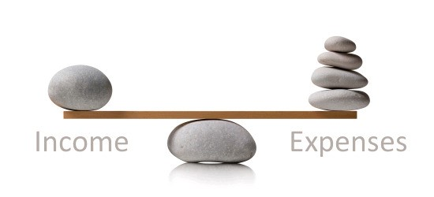

- Stop overspending
- Reach financial goals faster
- Reduce anxiety and allows you to spend money for leisure
- Give a boost to your savings
- Be flexible and gives you more control over expenses
Budgeting
What is Budgeting?
Budgeting is the process of creating a plan to spend your money. This spending plan is called a budget. Creating this spending plan allows you to determine in advance whether you will have enough money to do the things you need to do or would like to do. If you don't have enough money to do everything you would like to do, then you can use this planning process to prioritize your spending and focus your money on the things that are most important to you.
Why is Budgeting so Important?
Since budgeting allows you to create a spending plan for your money, it ensures that you will always have enough money for the things you need and the things that are important to you. Following a budget or spending plan will also keep you out of debt or help you work your way out of debt if you are currently in debt.
It allows you to
How to budget?
Now that we have learned the various advantages of budgeting how exactly do you budget?
A proven and easy method of budgeting is to use the 50/30/20 budget method. In this, you spend roughly 50% of your after-tax money on necessities, no more than 30% on wants, and at least 20% on savings and debt repayment. Over the long term, someone who follows these guidelines will have manageable debt, room to indulge occasionally, and savings to pay irregular or unexpected expenses and retire comfortably.
Allow up to 50% of your income for needsYour needs about 50% of your after-tax income should include:
- Groceries.
- Housing.
- Basic utilities.
- Transportation.
- Insurance.
- Minimum loan payments. Anything beyond the minimum goes into the savings and debt repayment category.
- Child care or other expenses you need so you can work.
If your absolute essentials overshoot the 50% mark, you may need to dip into the “wants” portion of your budget for a while. It’s not the end of the world, but you'll have to adjust your spending.
Leave 30% of your income for wantsSeparating wants from needs can be difficult. In general, though, needs are essential for you to live and work. Typical wants include dinners out, gifts, travel and entertainment.
It’s not always easy to decide. Is a gym membership a want or a need? How about organic groceries? Decisions vary from person to person.
If you're eager to get out of debt as fast as you can, you may decide your wants can wait until you have some savings or your debts are under control. But your budget shouldn't be so austere that you can never buy anything just for fun.
Every budget needs both wiggle room — maybe you forgot about an expense or one was bigger than you anticipated — and some money you're entitled to spend as you wish.
Your budget is a tool to help you, not a straitjacket to keep you from enjoying life, ever. If there's no money for fun, you'll be less likely to stick with your budget — and a good budget is one you’ll stick with.
Use 20% of your after-tax income to put something away for the unexpected, save for the
future and pay off debt. Make sure you think of the bigger financial picture; that may mean two-stepping
between savings and debt repayment to accomplish your most pressing goals.